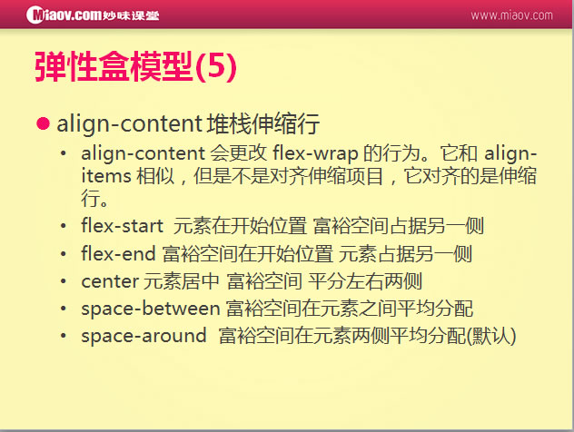
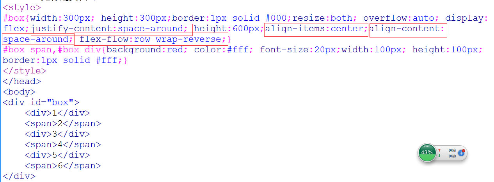
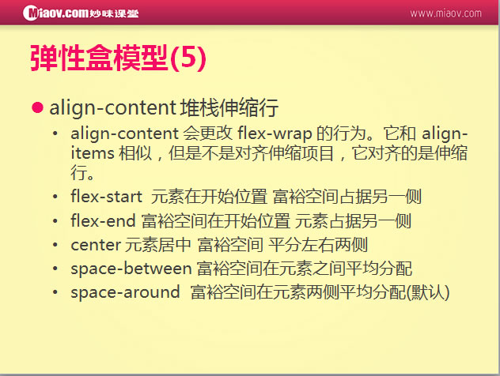
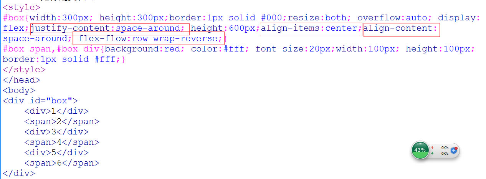

弹性盒模型display：flex
弹性布局：
设置主轴方向：


总结：＜ meta name="viewport" content="width=device-width,user-scalable=no,initial-scale=1.0,minimum-scale=1.0,maximum-scale=1.0"/＞
物理分别率：手机本身默认的分别率 eg:iphone5:1136x640
实际分别率: eg:iphone5实际 320
像素比：物理分别率/实际分别率 2
＜script>
//像素比计算
var iScale=1;
iScale/=window.devicePixelRatio;
document.write('＜meta name="viewport" content="width=device-width,initial-scale='+iScale+',minimum-scale='+iScale+',maximum-scale='+iScale+'" /＞');
＜/script＞
1,样式引入的3中方法中media的使用方式
max-width和 max-device-width的区别：max-device-width包含滚动条
2,以第3种@media调用方式说明：
@media screen{
.box{width:200px;height:200px;background:Red;}
}
自适应：
@media all and (max-width:420px){
.box{width:200px;height:200px;background:Red;}
}
@media all and (max-width:1024px) and (min-width:421px){
.box{width:300px;height:300px;background:blue;}
}
@media all and (min-width:1025px){
.box{width:400px;height:400px;background:yellow;}
}
/*
max-width:600px 600以及600一下宽度识别
min-width:421px 421以及421以上宽度识别
*/
像素比：物理分别率/实际分别率
注意：分栏布局中如果设置width和行数，只认行数，宽度没效果
html结构：
＜div class="wrap"＞
＜p＞啦啦啦……＜/p＞
＜p＞……＜/p＞
＜p＞……＜/p＞
＜p＞……＜/p＞
＜p＞……＜/p＞
＜p＞啦啦啦，啦啦啦……＜/p＞
＜/div＞
css编写：
＜style＞
@media all and (orientation:portrait){
.wrap{ -webkit-column-count:3;-webkit-column-gap:100px; -webkit-column-rule:1px solid #000;}
}
@media all and (orientation:landscape){
.wrap{ -webkit-columns:3;}
}
＜/style＞
弹性布局：
设置主轴方向：

